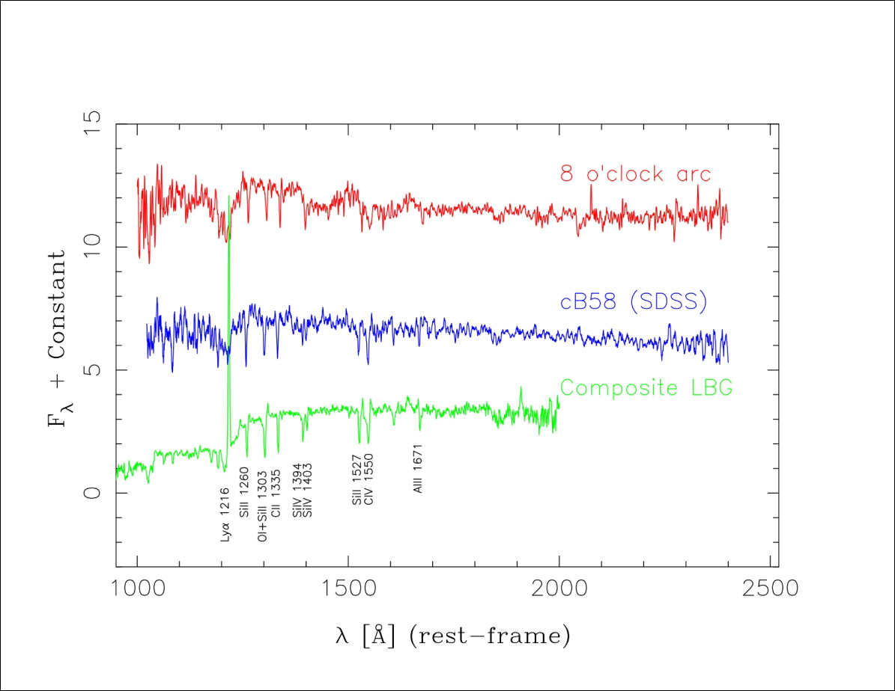

November 7, 2006
Gravity helps SDSS-II reveal a brilliant jewel of the early universe

The spectrum of the 8 O'Clock Arc (top), measured from the Apache Point
Observatory 3.5-meter telescope, demonstrates that it is a highly redshifted, distant, Lyman break galaxy. The Arc spectrum is similar to that of cB58 (middle), but somewhat different from the average spectrum of fainter Lyman break galaxies (bottom).
(Credit - Allam, SDSS-II collaboration)